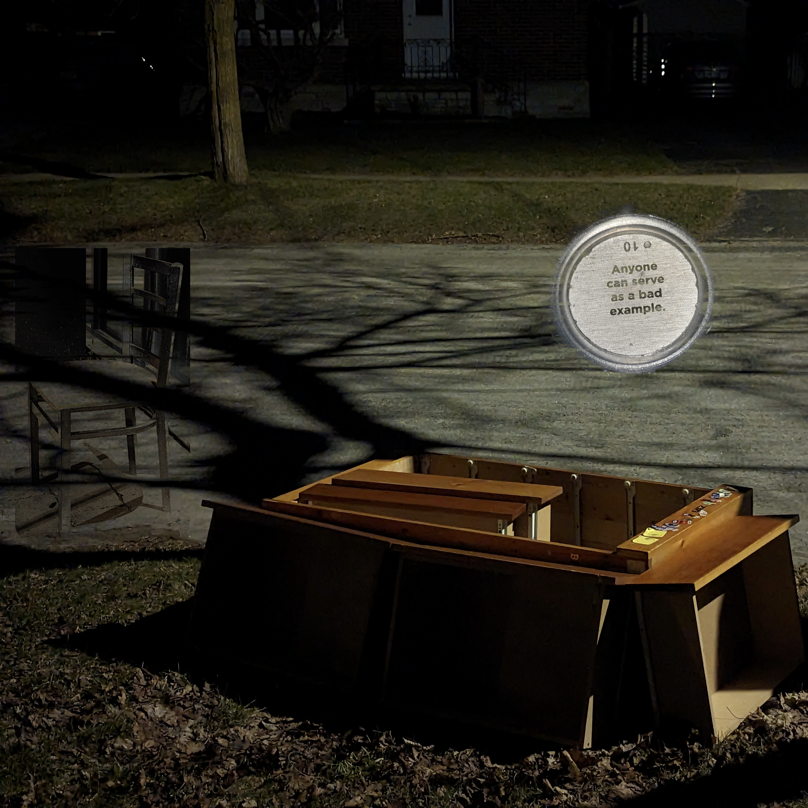

jump to: [lyrics] [breakdown]
deep underwater
fibre optics and shark teeth
i feel a tremor just like that
getting a rush that blinds me
my words can't find themselves
i am my own mother in the most beautiful way
i find the love in everything everyday
noise, love
what do you want in a song
fuzz, numb
getting away from the fun
♪
under the weather
running idle on the highway
i hit the brakes and just like that
get in a crash that blinds me
my lungs are filled with fear
i am my own father in the most brutal way
driving with the windows down and the heat up all the way
noise, love
what do you want in a song
fuzz, numb
getting away from the fun
♪
for two long years
for too long these
hands have been holding themselves
cold, rough
what do you want to discuss
dry, raw
nothing can rub this off
love, love, love, love, my love
i haven't been hungry
don't make me eat, eat, eat
we are not god-given
god gave us the right to reject Him
we are not circumstance
we are parallel, play with the diction (play with addiction)
love, love, love, love, my love
we were just kids
we didn't live like this
we slept on the floor
pretended a mattress made a bed
{various 'ooo's and such}
This song is about a past I tried to forget, and someone I hurt. There are details that have been completely fabricated for a better song, such as "2 long years", which in the context of what happened in real life doesn't fit anywhere, but I mostly stayed consistent with reality.
The first verse surmises a "love at first sight"-style interaction, wherein I am enamoured in a moment of weakness, represented by a shark biting into a deep sea fibre optic cable and experiencing a shock. The second verse shows another me, one less in wonder and less in touch. The real life car crash that inspired it blinded me only to the degree that my glasses were broken by the air bag.
The "noise/love" thing originally comes from an old draft I wrote when I was feeling disappointed in modern pop music. The second half was originally completely different, and I rewrote it to fit more with the topic of this song, and additionally how I find music to be a great tool for escapism.
Each verse ends with a comparison to one of my parents, and these comparisons mirror each other. The bridge and final pre-chorus (Yes, there's only one chorus in the whole song) make a large jump forward in time, after I've done the unforgivable, and the final pre-chorus especially is about my inability to undo the hurt i caused.
That brings us to the grand finale: the chorus, as I keep insisting on calling it. The first half of the chorus plays on the starving un-hunger I feel in times of tremendous stress, and the person I hurt's history with religion. It closes out with a very fun wordplay that I'm quite proud of. Following the instructions of, "we are parallel, play with the diction" leads to the line reading as "we are parallel play, with addiciton", referring of course to the concept of parallel play and (less 'of course') the addictive nature of comfort.
The second half of the chorus brings out remorse, and a hint of self-forgiveness. I did spend several months with a mattress and nothing else for my bed when I was 18. The chorus then ends earlier than it could be expected to, as I give in to the sorrow of guilt.
Instrumentally, There's not a whole lot going on. The drums are highly repetitive, the chords are simple and mostly go in pairs, and the bass is super simple. Despite that, I really, realy love the composition. This is one of the few songs I can't quite place any inspirations for, but I did use an unauthorized sample, if that counts.
—Robin